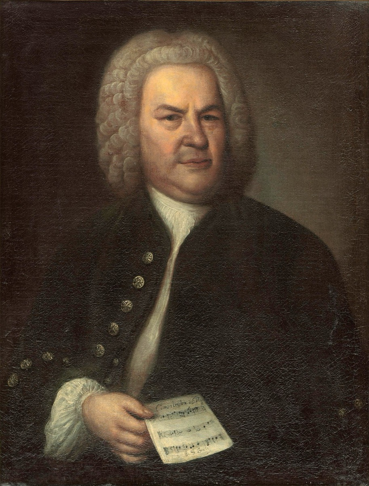

Begin with a plain fact that took the world a century to notice: in a provincial corner of Germany, between 1685 and 1750, a working church musician — never famous beyond his region, never employed by a great capital, never once outside a two-hundred-mile circle of small towns — wrote music that the entire world would eventually agree stands at the summit of the art. Not a summit. The summit: the body of work by which Western music measures everything else, including itself. When humanity chose music to represent the species aboard the Voyager probes, Bach received three tracks — more than any other composer from any culture in any century. The biologist Lewis Thomas, asked what we should send to the stars, gave the answer this whole site keeps circling back to: "I would vote for Bach, all of Bach. We would be bragging, but it is surely excusable."
What makes that verdict strange, and worth a student's sustained attention, is that nothing in the outward life predicts it. Johann Sebastian Bach was a guild craftsman from a family of guild craftsmen — orphaned at nine, trained by an elder brother, employed by dukes, princes, and town councils who documented him chiefly when he exasperated them. He was jailed for a month for trying to change jobs. He was his greatest employer's third choice, hired with the immortal shrug that "since the best men could not be obtained, mediocre ones would have to be accepted." He spent twenty-seven years fighting a town council over choir funding and fee schedules. And in the gaps of that utterly ordinary working life, on weekly deadlines that would break a modern film composer, he produced the Passions, the cantatas, the Well-Tempered Clavier, the cello suites, the Brandenburg Concertos, the B minor Mass, and The Art of Fugue.
Most Bach resources end in 1750. This one runs to the present, because the second half of the story is nearly as astonishing as the first — and far less told. When Bach died, his reputation died with him: the manuscripts scattered among nine heirs, perhaps two-fifths of the music dissolved through auction rooms and grocers' wrapping paper, and for eighty years "the great Bach" meant his sons. The recovery came through a relay of private hands — a diplomat's luggage, a Vienna salon where Mozart bent over the fugues, a grandmother's gift of a copied score — until a twenty-year-old named Mendelssohn conducted the St. Matthew Passion in Berlin in 1829 and the public finally caught up with what the professionals had never forgotten. From there the arc bends only upward: the great complete edition, Casals in a Barcelona junk shop, Gould in a New York studio, the period-instrument revolution, complete recorded surveys from Amsterdam to Kobe — and, in 1977, the music leaving the solar system entirely. The timeline's three arcs — the Life, the Eclipse and Rediscovery, the Living Bach — hold that whole story in one line of light.
Musically, Bach is the most complete education a single composer can provide. His teaching books — the Inventions, the Well-Tempered Clavier — remain, three centuries on, the standard curriculum of keyboard thinking and the universal grammar school of harmony; his chorales are still how the world learns four-part writing; his fugues are still what the word means. Study Bach closely and every other repertoire opens: the Renaissance polyphony he summarized, the Classical style his sons and their students built, the Romantics who worshipped him, the moderns who claimed him as the first of themselves. He is the pivot on which the whole tradition turns — the one composer who is simultaneously an ending, a beginning, and a permanent standard.
Historically, his documented life is an unmatched window into how music actually worked before the concert hall: the guild families and town pipers, the courts and consistories, the economics of patronage and the price of defying it, the weekly liturgical deadline as the engine of production. This companion keeps those working conditions in the foreground — the salaries, the contracts, the council minutes, the jail record — because the music makes a different and deeper sense when you know exactly what room it was written in, for whom, under what pressure, and at what personal cost.
Philosophically, Bach poses questions a student ends up carrying everywhere. What is the relationship between constraint and freedom, when the strictest canon sings and the tightest rules produce the most expressive music ever written? What is craft, when a man signs a coffee-house comedy and a five-voice Kyrie with the same Soli Deo Gloria? What is fame, when the age's verdict — "turgid, obsolete, mediocre" — is reversed so completely by posterity that the reversal itself becomes the great cautionary tale about judging in real time? And what is permanence, when a body of work survives not by acclaim but by custody — by widows, sons, students, copyists, and librarians who kept the paper moving until the world came back for it?
Wander. The site is built as a museum, not a syllabus: start anywhere on the timeline, click into any room, and follow the cross-links wherever curiosity leads — every essay ends with a door onward, and no path dead-ends. When a piece of music enters your studies, look it up in the Works: each card carries the story, the score, the films, and the interpretations worth comparing. When a technique needs grounding, the Craft essays define every term from zero. And when you want the deep versions of anything here, the Sources page lists the books this companion stands on — buy them; they are the real thing, and this site is proudly only their vestibule. Every fact here is flagged documented, tradition, or disputed, because honesty about evidence is itself one of the things Bach's story teaches.
The music is waiting. It has been waiting, patiently, since 1750 — and as the timeline's farthest light shows, it is already on its way somewhere else.